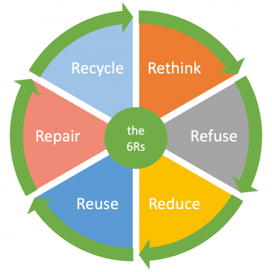

The future of waste management lies in innovation and forward-thinking solutions. Embracing new technologies and methodologies is essential to address the evolving nature of waste. From advanced recycling technologies to circular economy models, re-thinking waste management is about staying ahead of the curve.

- Smart Waste Management Systems:
Implementing IoT (Internet of Things) devices in waste bins to monitor and optimize waste collection routes. This reduces fuel consumption and minimizes the carbon footprint associated with collection vehicles.
- Blockchain for Supply Chain Transparency:
Utilizing blockchain technology to create transparent and traceable supply chains for products. Consumers can access information about a product's journey from raw material to disposal, encouraging companies to adopt sustainable practices.
- Waste-to-Energy Innovations:
Exploring advanced waste-to-energy technologies such as pyrolysis and anaerobic digestion to convert organic waste into energy. This not only addresses waste management but also contributes to renewable energy generation.
- Circular Economy Platforms:
Creating online platforms that facilitate the exchange or sale of used goods, promoting a circular economy. This encourages people to buy and sell pre-owned items, extending the lifespan of products and reducing overall waste.
- Zero-Waste Packaging Solutions:
Encouraging businesses to adopt innovative, compostable, or reusable packaging solutions. This could involve collaboration with designers and manufacturers to create eco-friendly packaging alternatives that minimize environmental impact
- Community-Led Recycling Initiatives:
Empowering local communities to take charge of their recycling efforts. Establishing community recycling centres, organizing neighbourhood clean-up events, and providing incentives for recycling can foster a sense of responsibility and ownership.
- Robotic Sorting Systems:
Implementing robotic sorting systems in recycling facilities to improve efficiency and accuracy in separating different types of materials. This not only speeds up the recycling process but also reduces contamination in recycled materials.
 Re-Think
Re-Think